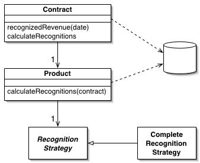

Domain Model (Модель области определения)

Паттерн проектирования Domain Model
Описание Domain Model
Объектная модель домена, объединяющая данные и поведение.
К сожалению, бизнес-логика приложения может быть очень сложной. Правила и логика описывают множество случаев и модификаций поведения. Для обработки всей этой сложной логики и проектируются объекты. Паттерн Domain Model (модель области определения) образует сеть взаимосвязанных объектов, в которой каждый объект представляет собой отдельную значащую сущность: может быть настолько большую, как корпорация или настолько малую, как строка из формы заказа.
Использована иллюстрация с сайта Мартина Фаулера.